數學基礎#
Laplace Transform and Inverse Laplace Transform#
Laplace Transform 用處 :
把時間域(t-domain)的微分方程轉換成複數域(s-domain)的代數方程，微分變成\(s\)、積分變成\(\frac{1}{s}\)的乘法解方程就方便許多。
在控制系統中描述
線性時非系統(Linear Time-Invariant System ,LTI System)的傳遞函數(Transfer function ,G)並用來分析系統的穩定性、響應特性。
Note
線性非時變系統簡單來說就是可以將一個狀態分解成幾個組成的線性疊加，例如說可以分解成由外力引起的響應+由初始條件引起的響應=總體的響應。
我覺得從控制的角度Laplace Transform是Fourier transform的升級版，相當於拓展了卷積定理，存在\(e^{+t}\)傅立葉會發散而拉普拉斯可以收斂。
Laplace Transform拿到傳遞函數並在虛軸上求頻率響應:奈奎斯特圖(Nyquist plot)、波德圖(Bode plot)。
Laplace Transform在數學上可以看作是矩量生成函數(moment generating function, MGF)的一種形式。
Laplace Transform :
Condition :
要求\(f(t)\)不能成長的跟\(e^{t^{2}}\)一樣快，也就是要滿足 :
Definition :
將時域函數\(f(t)\)映射到以複數平面上的各個頻率為基底的空間，並組合出\(F(s)\)。
Inverse Laplace Transform :
Definition :
將函數\(F(s)\)沿積分路徑是一條平行於虛軸的直線積分收斂區域得出\(f(t)\)。
Note
j是虛數單位，這堂課比較常出現j代表虛數單位。 這個定義建議是看看就好 :3
常用轉換表與規則
線性 (Linearity)
導數 (Differentiation)
積分 (Integration)
時移 (Time Shifting)
頻移 (Frequency Shifting)
卷積 (Convolution)
初值定理 (Initial Value Theorem
終值定理 (Final Value Theorem) $\( \lim_{t \to \infty} f(t) = \lim_{s \to 0} sF(s) \quad (\text{系統穩定時}) \)$
例題
解法1(ODE) :
計算\(y_h(t)\)和\(y_p(t)\)並合併，帶入初值。
解法2(Laplace) :
丟到\(\mathcal{L}\)利用導數關係再\(\mathcal{L}^{-1}\)丟回來。
解法3(LTI) :
將
總響應分解成由外力引起的響應(Zero-State response, ZSR)與由初始條件引起的響應(Zero-Input response, ZIR)。\[ Total \quad response = ZSR + ZIR \]For ZSR
\[\begin{split} \begin{align*} Y_{zs}(s) (s^2 + 5s + 6) &= \frac{2}{s} \\ Y_{zs}(s) &= \frac{\frac{1}{3}}{s} + \frac{-1}{s+2} + \frac{\frac{2}{3}}{s+3} \\\\ \end{align*} \end{split}\]For ZIR
\[\begin{split} \begin{align*} s(sY_{zi}(s)+2)-5 + 5(sY_{zi}(s)+2) + 6Y_{zi}(s) &= 0 \\ Y_{zi}(s) &= \frac{-2s-5}{s^2+5s+6} = \frac{-1}{s+2} + \frac{-1}{s+3} \end{align*} \end{split}\]Total response
\[\begin{split} \begin{align*} y(t) &= \mathcal{L}^{-1}[Y(s)] \\ &= \mathcal{L}^{-1}[ Y_{zs}(s) + Y_{zi}(s) ]\\ &= \mathcal{L}^{-1}[ \frac{\frac{1}{3}}{s} + \frac{-1}{s+2} + \frac{\frac{2}{3}}{s+3} + \frac{-1}{s+2} + \frac{-1}{s+3} ] \\ &= \underline{ -\frac{1}{3} e^{-3t} - 2 e^{-2t} + \frac{1}{3},\quad t\ge 0} \end{align*} \end{split}\]
Impulse Response 脈衝響應#
1. 定義#
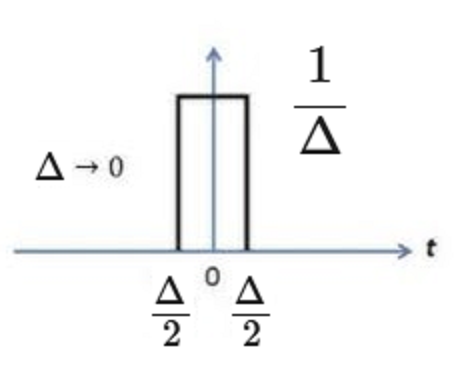
2. 物理意義#
如果初始條件為\(0\)，並用Impulse來激發一個LTI系統，其Response為Transform function，因為\(Y(s)=1*G(s)\)，透過輸入Impulse的實驗可以得到該系統在各個頻率下的Impulse response也就是Transform function的微分方程式，電機相關系統常常透過這種方式做實驗可以得到Transform funciton。
\(\Delta\)要足夠小，具體來說就是要遠小於系統的反應時間。對於一般電機系統，瞬間高頻的電流訊號可以當作Impulse、對於大氣科學中一般的對流來說聲波可以當作Impulse。 [應該吧]
### 3. 重點
\(Y(s)=U(s)G(s)\)
\(G(s)\)的分母為系統的特徵方程式
Impulse Response(ZIR)的基底由\(G(s)\)的pole決定
Bounded Input Bounded Output (BIBO) Stability#
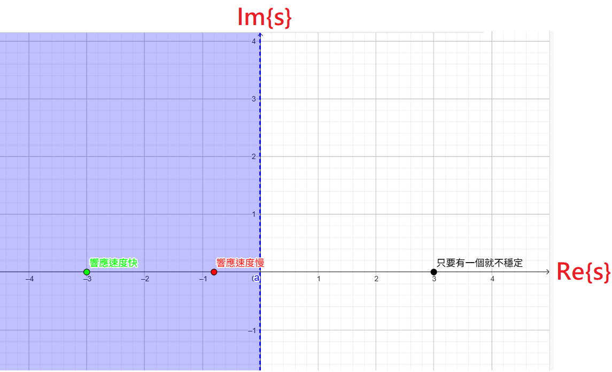
1. 定義#
\(g(t)\)：系統的脈衝響應
\(\int_0^\infty |g(\tau)| d\tau < \infty\) ⇔ 脈衝響應 絕對可積
\(G(s)\)：傳遞函數（\(G(s)=\mathcal{L}[g(t)]\)
開左半平面：\(\Re(s) < 0\)
2. 意義#
BIBO Stability在衡量LIT系統是否穩定，如果穩定則代表
輸入在time domain中都沒有發散，也就是s-domain中極點都在左半平面。
Routh–Hurwitz stability criterion#
1. 目的#
Routh criterion 是控制理論中的一個對於LTI系統穩定的充分必要條件的判據，可以判斷線性系統其特徵方程式的根是否都有負的實部(都在左半平面才BIBO穩定)。
2. 方程式的根都在左半平面的必要條件(並不充分)#
方程式所有係數都要存在(None of the coefficients vanish)
方程式所有係數都要同號(All coefficients have same sign)
3. 正常操作#
檢查第一排\(a_6 ,\quad a_5 ,\quad A ,\quad C ,\quad E ,\quad F ,\quad a_0\)有沒有變號，如果沒有表示該方程式\(F(s)\)的根都在左半平面(BIBO穩定)，若沒有則看變號k次則有k個根在右半平面，例如\((+,-,+,-,-,+,-)\)變號5次則有5個根在右半平面;\((+,-,-,-,-,-,+)\)變號2次則有兩個根在右半平面。
4. 特殊操作#
碰到\(\frac{a}{0}\)就在上一步的0假設趨近於0的\(\epsilon\)
變號2次有兩個根在右半平面，BIBO不穩定
碰到\(\frac{0}{0}\)，在上一步找輔助多項式(Auxiliary Polynomial)，並對其\(\frac{dA(s)}{ds}\)繼續做判據。
沒有變號，根都在左半平面(BIBO穩定)
5. 用途#
可以確定加了一個增益器K使系統能夠穩定的範圍。
穩定的必要條件個係數都有且同號
操作
第一直行\((1,2K,\frac{2K(K+3)-5} {2K},5)\)不能變號
import numpy as np
def routh_hurwitz(coeffs, eps=1e-6):
"""
Routh-Hurwitz 判準
coeffs: [a_n, a_{n-1}, ..., a_0]
eps: 避免除以零的小數
return: (first_column, is_stable)
"""
n = len(coeffs)
m = (n + 1) // 2 # 每列長度
routh = np.zeros((n, m))
# 填前兩列
routh[0, :len(coeffs[::2])] = coeffs[::2]
routh[1, :len(coeffs[1::2])] = coeffs[1::2]
# 遍歷每列
for i in range(2, n):
for j in range(m - 1):
a = routh[i-2, 0]
b = routh[i-2, j+1]
c = routh[i-1, 0]
d = routh[i-1, j+1]
if abs(c) < eps: # 避免除以零
c = eps
routh[i, j] = (c*b - a*d) / c
# 如果整列都是 0 → 輔助多項式法
if np.all(np.abs(routh[i]) < eps):
order = n - i
prev_poly = []
for k in range(m):
val = routh[i-1, k]
if val != 0:
prev_poly.append(val)
# 建立上一列對應的多項式
poly = np.poly1d(prev_poly)
deriv = np.polyder(poly)
deriv_coeffs = deriv.coeffs
# 填入
routh[i, :len(deriv_coeffs)] = deriv_coeffs
# 取出第一列
first_column = routh[:, 0]
# 判斷是否穩定
is_stable = np.all(first_column > 0) or np.all(first_column < 0)
return first_column, is_stable
# 測試案例
coeffs1 = [1, 1, 3, 3, 5] # 會遇到 a/0 問題
coeffs2 = [1, 3, 6, 6, 5, 3] # 會遇到 0/0 問題
for coeffs in [coeffs1, coeffs2]:
fc, stable = routh_hurwitz(coeffs)
print("係數:", coeffs)
print("Routh表第一列:", fc)
print("是否BIBO穩定:", stable)
print("----")
係數: [1, 1, 3, 3, 5]
Routh表第一列: [ 1.000000e+00 1.000000e+00 0.000000e+00 -4.999997e+06 5.000000e+00]
是否BIBO穩定: False
----
係數: [1, 3, 6, 6, 5, 3]
Routh表第一列: [1. 3. 4. 3. 3. 3.]
是否BIBO穩定: True
----
Frequency Respound#
1. 假設與證明#
假設 :
只討論輸入是由 sinusoidal wave 引起的訊號\(u(t)=sin(\omega_0t) \cdot u_s(t) \)在穩態的響應\(y(t)\)
假設 \(G(s)\) 是穩定的，因為\(ZIR\)的基底是\(G(s)\)所以最終會decay，因此只要看\(ZSR\)就好
證明 :
這部份想證明輸入\(u(t)\)和輸出\(y(t)\)之間的關係
由\(eq2.1\)開始，將\(G(s)\)和\(U(s)\)以部分分式的形式，輸入\(\mathcal{L}[sin(\omega_0t) \cdot u_s(t)]=\frac{\omega_0}{s^2+\omega_0^2}\)
找出部分分式係數\(\alpha_0\)和與其共軛的\(\alpha_0^*\)，可以利用\(\lim\limits_{s \to s_0} (s-s_0)Y(s)\)找出分母為\(s-s_0\)項的係數
因為前面有假設是在看穩態\(t \to \infty \)的響應，所以\(G(s) \to 1\)，在從\(eq2.1\)開始，把\(U(s)\)配成可以返回time domain的形式
可以注意到 \((\alpha_0 + \alpha_0^*)\)是\(2\alpha_0\)的實部且\((\alpha_0 - \alpha_0^*)\)是\(2\alpha_0\)的虛部。\(2\Re[\alpha_0]=\Im[G(j\omega_0)]\) 和 \(2\Re[\alpha_0j]=\Re[G(j\omega_0)]\)並求出\(y(t)\)，在利用合角公式使\(y(t)\)變成相對於\(u(t)\)放大\(M\)倍和相位移動\(\phi\)。
Note
其實對於相角差更好的定義方式是numpy中的 atan2(Im,Re) ，對於會經過虛軸的相角差才能找到真實值(這又何嘗不是一種折錯誤差呢:D)。 例如:atan(1,-1)=3/4 pi，相反tan([1]/[-1])=-1/4 pi。
2. 物理觀念#
一個LTI系統受到
旋波激發，在穩態的輸出會是一樣的旋波振福放大\(M\)倍、相位前進(或落後)\(\phi\)\(M\)和\(\phi\)的改變油
系統(Transfer function , G)來決定
工程上想了解系統，有效的手段是給很多不同頻率的旋波，並看輸入和輸出之間的關係
Note
大氣科學中有些現象可能不太適合用旋波去描述，可能就無法適用後面的Nyquist Plot和Bode Plot。 大氣科學中的頻散波和波破碎過程用這套方式解釋可能是有爭議的，所以我也有點束手無策qq
3. Frequency Domain Plot of G(s)#
連結
系統和輸出輸入之間的關係的直觀理解，增加對於非線性系統的理解(?)
Nyquist Plot (Polar Plot)
Bode Plot
Magnitude-Phase Plot
Nyquist Plot (Polar Plot)#
1. 主要概念#
Nyquist Plot把 \(G(j\omega)\)畫在s-domain上使 \(\omega \in (-\infty,\infty)\)
\(\omega \in (-\infty,0)\)和\(\omega \in (0,\infty)\)為上下半的曲線為鏡射關係，因為是\(G(s^*)=G(s)^*\)所以只需要對\(\omega \in (0,\infty)\)作圖即可
2. 例子#
\(G(s)=\frac{1}{Ts+1}\)
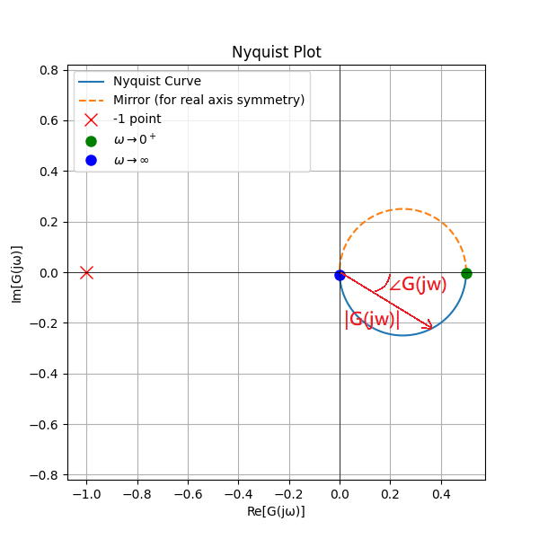
\(G(s)=\frac{T_2s+1}{T_1s+1}\)
需要分成 \(T_2>T_1\) 和 \(T_2<T_1\) 的情況去討論，但其實可以注意到就是一個不動點 \((1,0)\) 和一個會動的點\((\frac{T_2}{T_1},0)\) 所構成的圖形
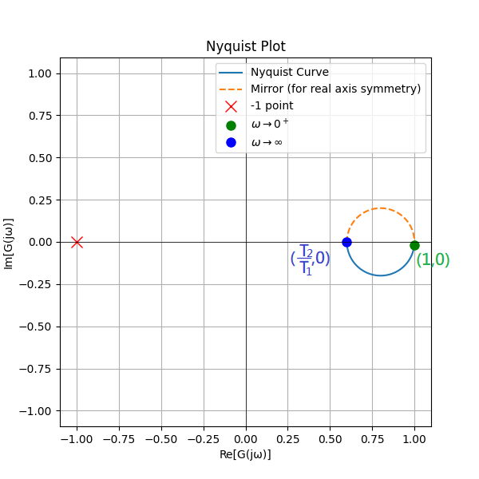
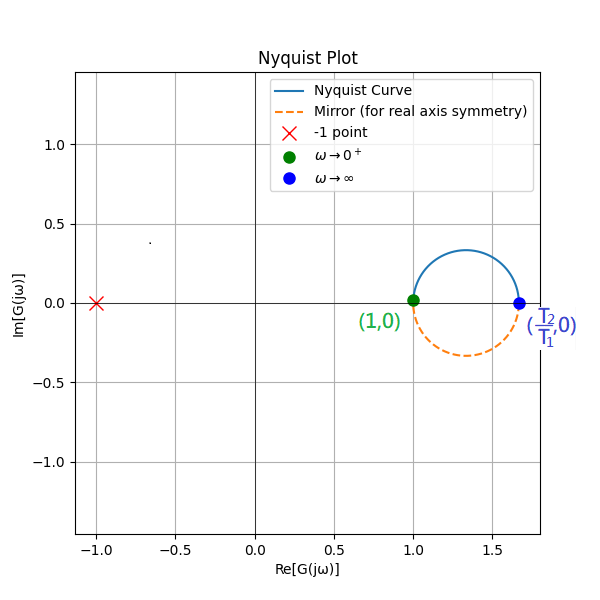
\(G(s)=\frac{10}{s(s+1)}\)
可以注意到當 \(\omega \to \infty \) 時， \(G(j\omega)=-10+0j\) ，也就是存在漸進線 \((\Re[s]=-10)\)
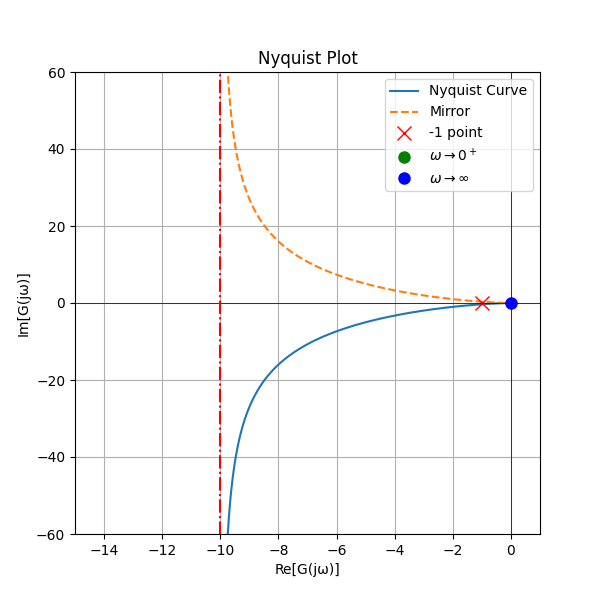
\(G(s)=\frac{10}{s(s+1)(s+2)}\)
在實係數的 \(G(s)\) 若想確定重根可以解出過實軸的 \(\omega=\sqrt{2}\) ，有 \((\frac{-5}{3},0)\) 的交點
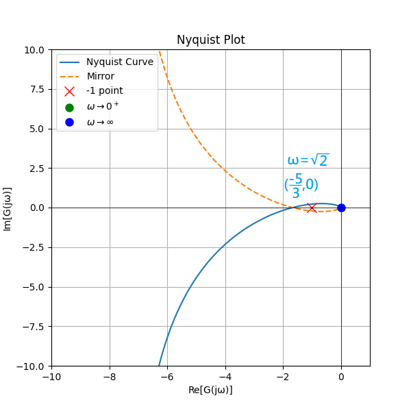
import numpy as np
import matplotlib.pyplot as plt
from scipy import signal
def nyquist_plot(num, den, w_min=0.01, w_max=100, points=1000):
"""
畫 Nyquist Plot，並標記 w -> 0+ 與 w -> ∞ 的位置
num: list, 分子多項式係數 (最高次在前)
den: list, 分母多項式係數 (最高次在前)
w_min, w_max: 頻率範圍 (rad/s)
points: 頻率採樣點數
"""
# 建立傳遞函數
system = signal.TransferFunction(num, den)
# 頻率取樣 (對數刻度)
w = np.logspace(np.log10(w_min), np.log10(w_max), points)
# 計算頻率響應
w, H = signal.freqresp(system, w)
# Nyquist Plot
plt.figure(figsize=(6,6))
plt.plot(H.real, H.imag, label="Nyquist Curve")
plt.plot(H.real, -H.imag, '--', label="Mirror")
# 標記 -1 點
plt.plot(-1, 0, 'rx', markersize=10, label="-1 point")
# 標記 w -> 0+
plt.plot(H[0].real, H[0].imag, 'go', markersize=8, label=r"$\omega \to 0^+$")
#plt.text(H[0].real, H[0].imag, r"$\omega \to 0^+$", fontsize=10, ha='right', color="green")
# 標記 w -> ∞
plt.plot(H[-1].real, H[-1].imag, 'bo', markersize=8, label=r"$\omega \to \infty$")
#plt.text(H[-1].real, H[-1].imag, r"$\omega \to \infty$", fontsize=10, ha='left', color="blue")
plt.axhline(0, color='k', linewidth=0.5)
plt.axvline(0, color='k', linewidth=0.5)
plt.plot([-10,-10],[-100,100],'r' ,linestyle="-.")
plt.xlabel("Re[G(jω)]")
plt.ylabel("Im[G(jω)]")
plt.title("Nyquist Plot")
plt.legend()
#plt.axis("equal")
plt.grid(True)
plt.xlim(-15, 1)
plt.ylim(-60, 60)
num_part = "-".join(map(str, num))
den_part = "-".join(map(str, den))
#plt.savefig(f"nyquist_plot{num_part}_{den_part}.png"
plt.show()
# 🎯 範例：G(s) = 10 / (s^2 + 1s + 0)
num = [10]
den = [1,1,0]
#nyquist_plot(num, den)
Bode Plot#
1. 主要概念#
Bode Plot把 \(G(j\omega)\) 分成 \(\left| G(j\omega)\right|\) 和 \(\angle G(j\omega)\) 對輸入的頻率 \(\omega\) 上作圖，所以一組Bode Plot會有兩張圖。
通常假設 \(G(s)=K \frac{\prod\limits_{i=1}^{n} (s-z_i)}{\prod\limits_{i=1}^{n} (s-p_i)}\) 所以log後計算只要處理加減法會比較方便
\(\omega \in (-\infty,0)\)和\(\omega \in (0,\infty)\) 在 \(\left| G(j\omega)\right|\) 是相同的，而在 \(\angle G(j\omega)\) 相差一個負號(對於x軸對稱)，因為是\(G(s^*)=G(s)^*\)所以只需要對\(\omega \in (0,\infty)\)作圖即可
Bode Plot的第一張圖\(y:\left| G(j\omega)\right| ,x: \omega\) 可以看到LTI系統對於輸入頻率的響應放大\(\left| G(j\omega)\right|\)。第二張圖\(y:\angle G(j\omega) ,x: \omega\) 可以看到LTI系統對於輸入頻率的響應延遲 \(\angle G(j\omega)\)
碰到 \(G(j\omega)\) 的
zeros零點或poles極點，Bode Plot的第一張圖在xy軸都是log座標下的斜率會增加1或減少1的 \(\frac{\left| G(j\omega)\right|}{\omega}\) 斜率，工程上會說 \(\pm 20dB/dec \)。Bode Plot的第二張圖相位會增加 \(\frac{\pi}{2}\) 或減少 \(\frac{\pi}{2}\)
Note
工程上常常把 \(\left| G(j\omega)\right|\) 使用log軸並改成dB為單位，但是我在這裡只會使用log軸，因為加入dB討論我覺得只是徒增混亂。 仍保留使用log是因為Transfer function通常是由相乘(或連乘函數)所組成，所以log座標下只要把兩個響應相加就會是合在一起的響應，更直觀理解。 工程上y軸常常用dB、x軸常常用decade來表示。 注意到:10dB/dec=1
2. 例子#
\(G(s)=k \quad , k \) is constant
量值放大K倍，相位沒有改變
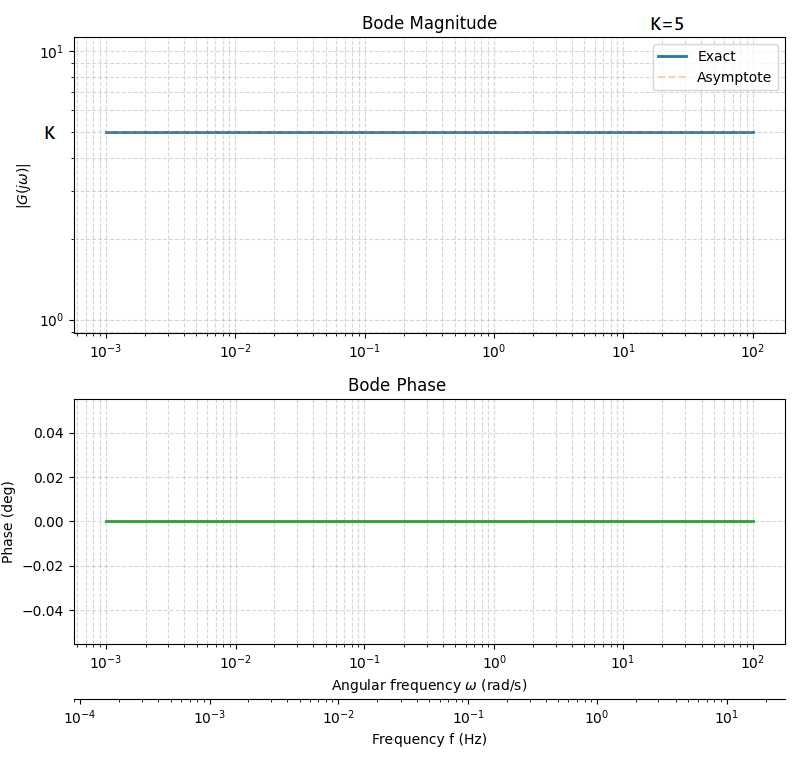
\(G(s)=s^n \)
量值斜率為\(n\)，相位位移\(\frac{\pi}{2}n\)
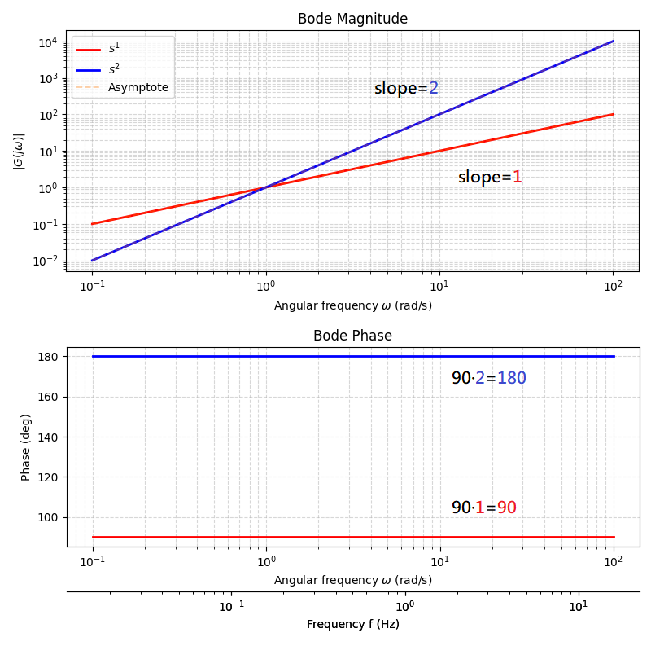
\(G(s)=sT+1 \)
\(T\)會影響轉折點，用手處理Bode Plot都會要求把常數變成1，所以處理 \(G(s)=sT+2\) 會先變成 \(G(s)=2(s\frac{T}{2}+1)\) ，也就是量值放大2倍、相位與原先的 \(G(s)=sT+1 \) 一樣。

\(G(s)=\frac{1}{sT+1} \)
配合第3個例子可以構想到， \(G(s)=\frac{1}{(sT+1)^2}\)量值平方、相位與原先的 \(G(s)=\frac{1}{sT+1} \) 放大2倍。
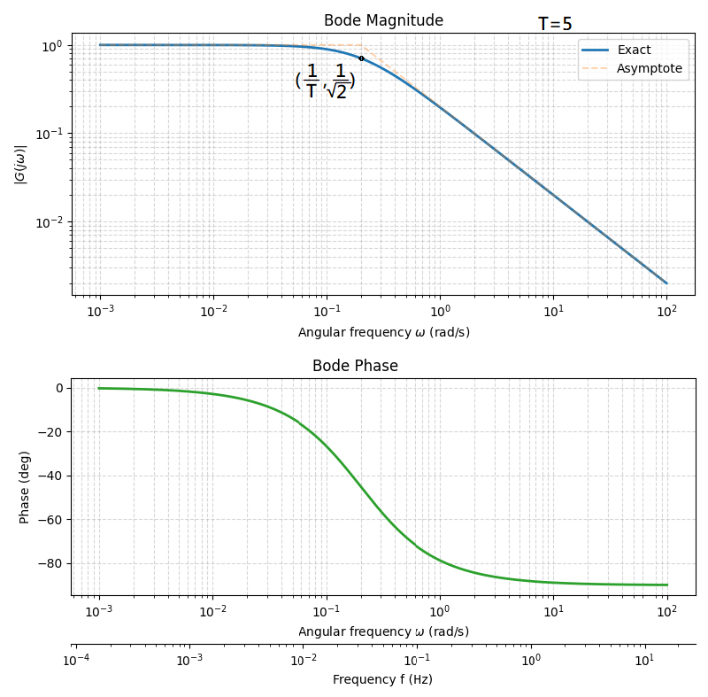
\(G(s)=\frac{\omega_n^2}{s^2+2\zeta\omega_ns+\omega_n^2} \)
這是個標準常見的2階系統， \(\omega_n\) 表示該系統的自然震盪頻率、 \(\zeta\) 為該系統的阻尼比 \((0\le \zeta \le 1)\)
當系統阻尼比趨近於0 \((\zeta \to 0)\) ，則 \(\left| G(j\omega_n) \right| \to \infty\)
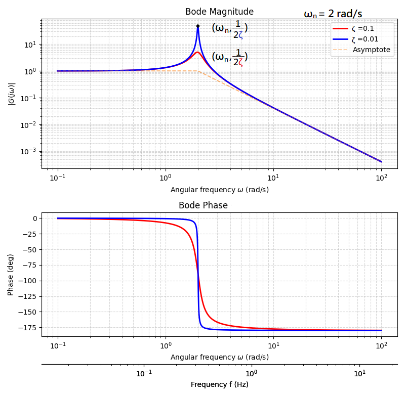
上圖顯示一輸入至系統 \(G\) ，其輸出的
振幅比和相位差隨輸入的頻率不同而改變，如果拿示波器測量
\(G(s)=\frac{s^2+2\zeta\omega_ns+\omega_n^2}{\omega_n^2} \)
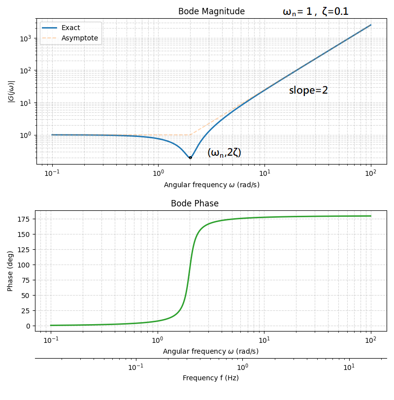
\(G(s)=\frac{s^2+2\zeta_z\omega_ns+\omega_n^2}{s^2+2\zeta_p\omega_ns+\omega_n^2} \)
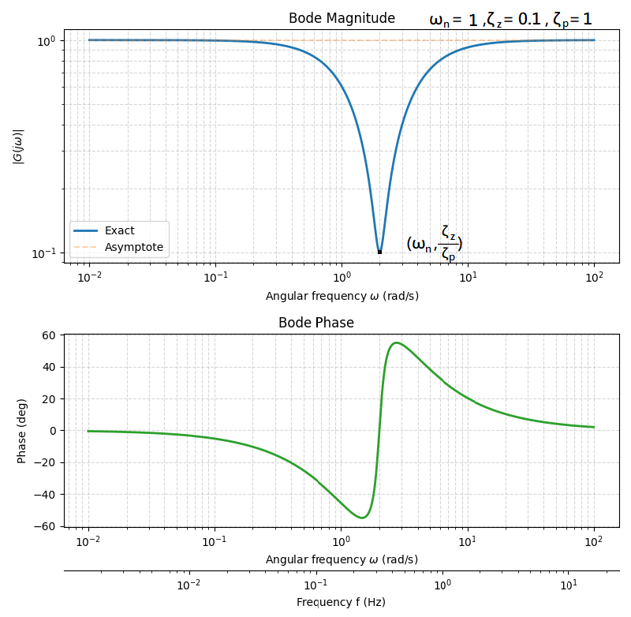
當 \(\zeta_p > \zeta_z\) 會是凹(notch)的量值，\(\zeta_p < \zeta_z\) 則為凸的量值
\(\zeta_z\) 決定了notch的寬窄，當 \(\zeta_z\) 大則寬、 \(\zeta_z\) 小則窄
工程中因為台灣的電壓頻率是110V、60Hz的，為了不讓外界影響器具都會給定一個濾波器，讓
特定頻率的輸出為0，而非特定頻率則輸出1
Note
讀到這裡我想起大氣窗也是這種性質，是不是在模式計算中很消耗資源的輻射計算可以透過給定一個相當複雜的transfer function來加速運算呢?
\(G(s)=e^{-sT} \)
可以做一點輕鬆地推導
我們程式繪圖運行transfer function定義時希望能配成分子分母的多項式形式。數值上如果想要將一個函數展開會用泰勒展開(Taylor expansion)，但是這並沒有配成分子分母都是多項式的形式，所以可以使用Pade approximant，想法上也很簡單
\(G(s)=\frac{10(s+10)}{s(s+2)(s+5)} \)
定義了一些輸入的頻率 \(\omega_g\) 和 \(\omega_p\)
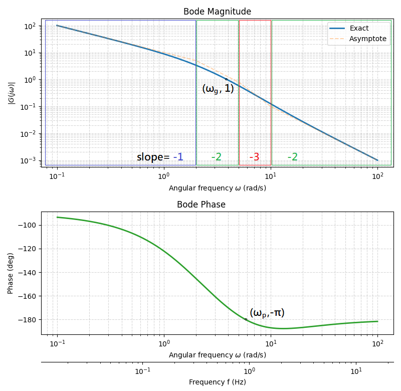
3. 名詞定義#
Gain-crossover frequency \(\omega_g\) :特定的輸入頻率使的輸出的量值為\(1\)， \(\left| G(j\omega_g) \right|=1\)
Phase-crossover frequency \(\omega_p\) :特定的輸入頻率使的輸出的相位差為 \(-\pi\) ， \(\angle G(j\omega_p) =-\pi\)
Minimum-phase transger functions(極小相位系統):極點、零點都在s-domain中的左半平面。透過振幅響應就足以完整描述系統在時域和頻域的行為
Non-minimum-phase transger functions(非極小相位系統):存在一個以上的極點、零點在s-domain中的右半平面。通常代表不穩定和不好預測。
import numpy as np
import matplotlib.pyplot as plt
from scipy import signal
def plot_bode_fixed_asymptote(G, w_min=1e-2, w_max=1e2, num_points=1000,
dB=False, logy=False, asymptotes=True,
fc_tol_rel=1e-8, fc_tol_abs=1e-12,
show_individual_breaks=False, debug=False,
asym_alpha=0.35, asym_linestyle='--', asym_color='C1'):
"""
繪製以 rad/s 為主軸的 Bode plot（幅值+相位），並可選擇繪出漸進線。
參數:
-------
G : scipy.signal.TransferFunction
傳遞函數 (s-domain)，注意 scipy 的 TransferFunction 使用 s 的係數
w_min, w_max : float
頻率範圍 (rad/s)
num_points : int
頻率採樣點數
dB : bool
True -> 顯示 dB，False -> 顯示線性幅值
logy : bool
True -> 當線性幅值時用對數 y 軸 (10^n)。若 dB=True 則忽略此參數。
asymptotes : bool
是否繪製漸進線（break-frequency-based）
fc_tol_rel / fc_tol_abs: float
tolerance for grouping nearly-equal break freqs
show_individual_breaks: bool
draw each root's vertical marker (useful to see cancellations)
asym_alpha : float
漸進線透明度
asym_linestyle, asym_color : style for asymptote lines
------
returns info dict with zeros/poles and grouped events
"""
# frequency array (rad/s)
w = np.logspace(np.log10(w_min), np.log10(w_max), num_points)
# extract numerator/denominator arrays if TransferFunction provided
if isinstance(G, signal.TransferFunction):
num = np.atleast_1d(np.asarray(G.num)).ravel()
den = np.atleast_1d(np.asarray(G.den)).ravel()
else:
num, den = G
# exact bode (mag in dB, phase in deg)
w_out, mag_db, phase = signal.bode((num, den), w=w)
# compute zeros/poles in rad/s
z, p, k = signal.tf2zpk(num, den)
z_wc_all = np.abs(z) if z.size > 0 else np.array([])
p_wc_all = np.abs(p) if p.size > 0 else np.array([])
# count origin multiplicity (wc == 0)
z_origin_count = np.count_nonzero(np.isclose(z_wc_all, 0.0))
p_origin_count = np.count_nonzero(np.isclose(p_wc_all, 0.0))
origin_slope = z_origin_count - p_origin_count # in "exponent" (linear), dB/dec = 20 * origin_slope
# gather raw events for wc > 0: each zero => +1, each pole => -1
events_raw = []
for wc in z_wc_all:
wc = float(wc)
if wc > 0:
events_raw.append((wc, +1))
for wc in p_wc_all:
wc = float(wc)
if wc > 0:
events_raw.append((wc, -1))
events_raw.sort(key=lambda x: x[0])
# group events by proximity (tolerance)
grouped = []
if events_raw:
cur_wc, cur_delta = events_raw[0]
count = 1
for wc, delta in events_raw[1:]:
tol = max(fc_tol_abs, fc_tol_rel * max(cur_wc, wc))
if abs(wc - cur_wc) <= tol:
cur_delta += delta
cur_wc = (cur_wc * count + wc) / (count + 1)
count += 1
else:
grouped.append((cur_wc, cur_delta))
cur_wc, cur_delta = wc, delta
count = 1
grouped.append((cur_wc, cur_delta))
# Build piecewise asymptote in dB using continuity at each breakpoint
asym_db = np.full_like(w, fill_value=np.nan, dtype=float)
base_w = w[0]
base_db = mag_db[0]
slope_count = origin_slope
slope_db_per_dec = 20.0 * slope_count
seg_starts_w = [base_w]
seg_starts_db = [base_db]
seg_slope_db = [slope_db_per_dec]
for wc, delta in grouped:
if wc <= base_w:
slope_count += delta
slope_db_per_dec = 20.0 * slope_count
seg_slope_db[-1] = slope_db_per_dec
continue
db_at_wc = base_db + slope_db_per_dec * (np.log10(wc) - np.log10(base_w))
seg_starts_w.append(wc)
seg_starts_db.append(db_at_wc)
slope_count += delta
slope_db_per_dec = 20.0 * slope_count
seg_slope_db.append(slope_db_per_dec)
base_w = wc
base_db = db_at_wc
seg_boundaries = seg_starts_w + [w[-1]*10]
for i in range(len(seg_starts_w)):
w_start = seg_starts_w[i]
w_end = seg_boundaries[i+1]
mask = (w >= w_start) & (w < w_end)
if not np.any(mask):
continue
asym_db[mask] = seg_starts_db[i] + seg_slope_db[i] * (np.log10(w[mask]) - np.log10(w_start))
nan_mask = np.isnan(asym_db)
if np.any(nan_mask):
last_i = len(seg_starts_w)-1
asym_db[nan_mask] = seg_starts_db[last_i] + seg_slope_db[last_i] * (np.log10(w[nan_mask]) - np.log10(seg_starts_w[last_i]))
# Convert asymptote to linear magnitude if needed
asym_linear = 10**(asym_db / 20.0)
mag_linear = 10**(mag_db / 20.0)
# ---------- plotting ----------
plt.figure(figsize=(8,4))
if dB:
plt.semilogx(w, mag_db, lw=2, color='C0', label='Exact (dB)')
if asymptotes:
plt.semilogx(w, asym_db, linestyle=asym_linestyle, alpha=asym_alpha,
lw=1.4, color=asym_color, label='Asymptote (dB)')
plt.ylabel('Magnitude (dB)')
else:
if logy:
plt.loglog(w, mag_linear, lw=2, color='C0', label='Exact')
if asymptotes:
plt.loglog(w, asym_linear, linestyle=asym_linestyle, alpha=asym_alpha,
lw=1.4, color=asym_color, label='Asymptote')
plt.ylabel(r'$|G(j\omega)|$')
else:
plt.semilogx(w, mag_linear, lw=2, color='C0', label='Exact (linear)')
if asymptotes:
plt.semilogx(w, asym_linear, linestyle=asym_linestyle, alpha=asym_alpha,
lw=1.4, color=asym_color, label='Asymptote (linear)')
plt.ylabel(r'$|G(j\omega)|$ (linear)')
if show_individual_breaks:
ylim = plt.gca().get_ylim()
for wc in z_wc_all:
if wc > 0 and w_min <= wc <= w_max:
plt.axvline(x=wc, color='g', linestyle=':', alpha=0.5)
plt.text(wc, ylim[1]*0.9, 'z', color='g', ha='center', va='top', fontsize=8)
for wc in p_wc_all:
if wc > 0 and w_min <= wc <= w_max:
plt.axvline(x=wc, color='r', linestyle=':', alpha=0.5)
plt.text(wc, ylim[1]*0.8, 'p', color='r', ha='center', va='top', fontsize=8)
plt.grid(True, which='both', ls='--', alpha=0.5)
plt.xlabel(r'Angular frequency $\omega$ (rad/s)')
plt.title('Bode Magnitude')
plt.legend()
plt.tight_layout()
#plt.savefig(f'Bode_plot_magnitude_{num_part}_{den_part}.png')
# ===== Phase plot =====
fig, ax1 = plt.subplots(figsize=(8,4))
ax1.semilogx(w, phase, lw=2, color='C2')
ax1.grid(True, which='both', ls='--', alpha=0.5)
ax1.set_xlabel(r'Angular frequency $\omega$ (rad/s)')
ax1.set_ylabel('Phase (deg)')
ax1.set_title('Bode Phase (exact)')
# rad/s <-> Hz 轉換
def rads_to_hz(x):
return x / (2*np.pi)
def hz_to_rads(x):
return 2*np.pi*x
# 副軸 (Hz)
ax2 = ax1.secondary_xaxis('bottom', functions=(rads_to_hz, hz_to_rads))
ax2.set_xlabel('Frequency f (Hz)')
ax2.spines["bottom"].set_position(("outward", 40))
plt.tight_layout()
plt.savefig(f'Bode_plot_phase_{num_part}_{den_part}.png')
plt.show()
# debug info
info = {
'zeros': z, 'poles': p, 'gain_k': k,
'z_wc_all': z_wc_all, 'p_wc_all': p_wc_all,
'origin_counts': {'zeros': int(z_origin_count), 'poles': int(p_origin_count)},
'events_raw': events_raw,
'grouped_events': grouped,
'segment_starts_w': seg_starts_w,
'segment_starts_db': seg_starts_db,
'segment_slope_db': seg_slope_db
}
if debug:
print("zeros (z):", z)
print("poles (p):", p)
print("zero wc (rad/s):", z_wc_all)
print("pole wc (rad/s):", p_wc_all)
print("origin zero count:", z_origin_count, " origin pole count:", p_origin_count)
print("raw events (wc,+1/-1):", events_raw)
print("grouped events (wc_center, net delta):", grouped)
return info
# ===== 使用範例 =====
if __name__ == '__main__':
from scipy.signal import TransferFunction
T = 5
wn = 2
zeta = 0.1
# 2接
num = [1 , 2*zeta*wn , wn**2 ]
den = [1 , 2*zeta*5*wn , wn**2 ]
# Pade
x = -T
num = [x**2/12 , x/2 , 1 ]
den = [x**2/12 , -x/2 , 1 ]
num = [10,100]
den = [1,7,10,0]
num_part = "-".join(map(str, num))
den_part = "-".join(map(str, den))
#G = TransferFunction([wn**2], [1 , 2*zeta*wn , wn**2 ])
#G = TransferFunction([T , 1], [1 ])
G = TransferFunction(num, den)
#需要繪圖跑程式再打開
#info = plot_bode_fixed_asymptote(G, w_min=1e-1, w_max=1e2, dB=False, logy=True, asymptotes=True)
補充#
\([n/m]\) Padé 的系統化推導（線性方程）#
設要逼近一個函數的 Maclaurin 級數
求有理式
使得 \(R(x)\) 與 \(f(x)\) 的 Maclaurin 展開在前 \(n+m\) 階相同，亦即
把 \(Q(x) f(x)\) 展開，等價於對係數 \(k=0,\dots,n+m\) 要滿足
其中我們取 \(b_0=1\)，且當 \(k>n\) 時 \(a_k=0\)。
把等式分成兩組：
對 \(k=0,\dots,n\)，由上式可以解出 \(a_0,\dots,a_n\)（每個 \(a_k\) 是 \(b\) 的線性函數），因為這些方程包含 \(a_k\)。
對 \(k=n+1,\dots,n+m\)（總共 m 個方程），這些方程中 \(a_k=0\)，會變成只含 \(b_1,\dots,b_m\) 的線性方程組。寫成矩陣形式：
對 \(k=n+1,\dots,n+m\)：
改寫索引（令 \(i=k-(n+1)\)，\(i=0,\dots,m-1\)）後，可得到一個 \(m\times m\) 的線性系統：
（這個矩陣是 Toeplitz 形式，由 \(c\) 的項構成。）
解出 \(b\) 後，回代前面 \(k=0\ldots n\) 的方程求出 \(a\)。
因此 \([n/m]\) Padé 問題等價於「解一個 m × m 的線性系統再回代」，數值上很穩定（除非 \(c_k\) 導致矩陣奇異）。
import numpy as np
import math
from scipy import signal
def pade_from_taylor(c, n, m):
"""
c : list/array of Taylor coefficients c0, c1, c2, ... up to at least n+m
n, m : numerator/denominator degrees
returns: (a_coeffs, b_coeffs) where
P(x) = a0 + a1 x + ... + a_n x^n
Q(x) = 1 + b1 x + ... + b_m x^m
"""
c = np.asarray(c, dtype=float)
assert len(c) >= n + m + 1, "need Taylor coefficients up to c_{n+m}"
# Build matrix A for b unknowns (m x m)
A = np.zeros((m, m))
rhs = np.zeros(m)
for i in range(m):
# row i corresponds to equation for k = n+1 + i
k = n + 1 + i
rhs[i] = -c[k]
for j in range(m):
A[i, j] = c[k - (j+1)] # c_{k-1}, c_{k-2}, ...
b = np.linalg.solve(A, rhs) if m>0 else np.array([])
# compute a coefficients using k=0..n: a_k = sum_{j=0..min(k,m)} b_j c_{k-j}, with b0=1
a = np.zeros(n+1)
for k in range(n+1):
s = 0.0
for j in range(0, min(k, m) + 1):
bj = 1.0 if j == 0 else b[j-1]
s += bj * c[k-j]
a[k] = s
# return arrays (P numerator coefficients, Q denominator with leading 1)
b_full = np.concatenate(([1.0], b))
return a, b_full
# Example: e^x => c_k = 1/k!
def taylor_coeffs_expx(N):
return [1.0 / math.factorial(k) for k in range(N+1)]
# test [2/2] for e^x
c = taylor_coeffs_expx(4) # need up to c_{n+m}=c_4
a, b = pade_from_taylor(c, n=2, m=2)
print("P (numerator) coeffs:", a) # a0, a1, a2
print("Q (denominator) coeffs:", b) # [1, b1, b2]
# If you want to build TransferFunction approximation for e^{-sT}, substitute x = -sT:
T = 5.0
# for e^{-sT}, the polynomial in s: P(-sT), Q(-sT)
# If P(x) = a0 + a1 x + a2 x^2, then P(-sT) coeffs (in descending powers of s) are:
# numer(s) = a2*(T^2)*s^2 + a1*(-T)*s + a0 (but TransferFunction expects descending poly as list)
# best is to construct polynomials in s by replacing x with -s*T
def poly_in_s_from_a(a_coeffs, T):
# a_coeffs: [a0, a1, a2, ...] (ascending)
n = len(a_coeffs)-1
# build array of s-coeffs from highest power to constant term
s_coeffs = [0.0]*(n+1)
for k, ak in enumerate(a_coeffs):
# term ak * (-s*T)^k => coefficient for s^k: ak * (-T)^k
s_coeffs[n-k] = ak * ((-T)**k) # put in descending order
return s_coeffs
num_s = poly_in_s_from_a(a, T)
den_s = poly_in_s_from_a(b, T)
print("TransferFunction numerator (s-descending):", num_s)
print("TransferFunction denominator (s-descending):", den_s)
# Build scipy TransferFunction
G_approx = signal.TransferFunction(num_s, den_s)
print(G_approx)
P (numerator) coeffs: [1. 0.5 0.08333333]
Q (denominator) coeffs: [ 1. -0.5 0.08333333]
TransferFunction numerator (s-descending): [np.float64(2.0833333333333344), np.float64(-2.5), np.float64(1.0)]
TransferFunction denominator (s-descending): [np.float64(2.083333333333333), np.float64(2.4999999999999996), np.float64(1.0)]
TransferFunctionContinuous(
array([ 1. , -1.2 , 0.48]),
array([1. , 1.2 , 0.48]),
dt: None
)